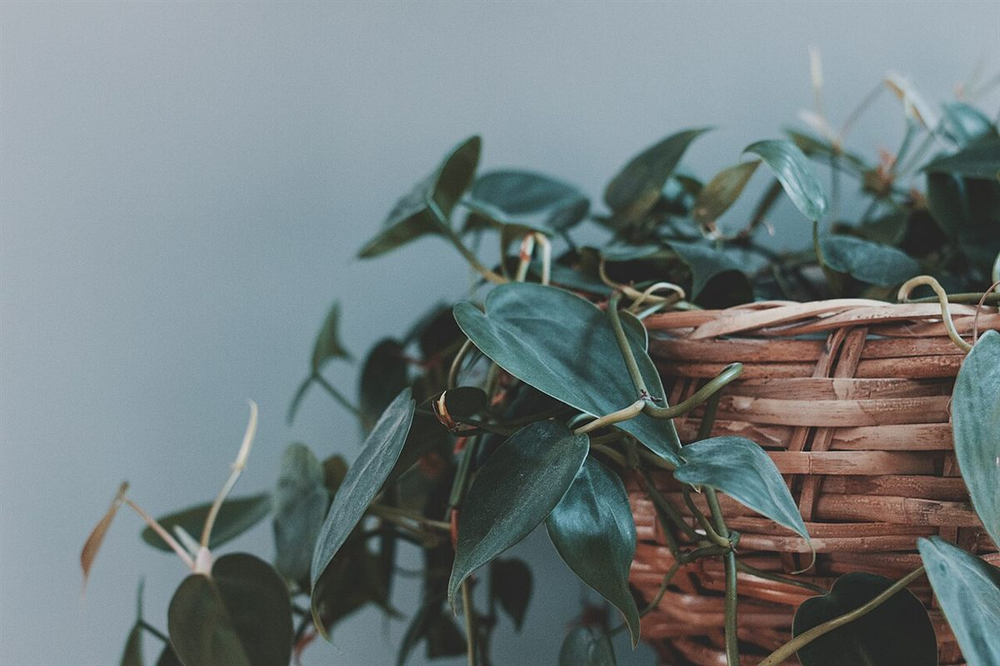

お店について

基本情報
| 屋号 | カフェポルテ |
|---|---|
| 所在地 | 新潟県三条市興野3丁目1-11 |
| 電話 | 070-1434-2435 |
| @porte.kitchen.2023 | |
| 営業時間 | 準備中(お問い合わせください) |
| 定休日 | 準備中(お問い合わせください) |
| スタッフ | 準備中(お問い合わせください) |
コンセプト案(制作側の案)
「写真で、一杯の時間をそっと並べる」。このページをつくるにあたって、制作側が考えた表現上の案です。お店の理念や考え方を表すものではなく、店名の意味とも関係ありません。店名の意味・由来は、店主様にうかがったうえで掲載します。店主様のお考えが分かりましたら、この案は差し替えます。
お店からのご紹介は準備中です
お店についての詳しい内容は、確認でき次第掲載します。お急ぎの場合は、お電話かInstagramからお問い合わせください。